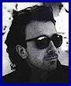

Thursday, January the 20th, 2005
back to: title, date or indexes
That beacon of common sense and moderation, the Reverend Ian Paisley, described the recent £22 million bank robbery in Northern Ireland as “the crime of the century”. Things bode well for the next ninety-five years, then.
His comment set me thinking about the crime of the century just gone, so I went to Google to have a look. There were 65,800 results, but I was able to discount the majority of these because they referred to songs by Shania Twain and Supertramp. (On second thoughts… maybe those titles were accurately self-referential.) Anyway, the usual suspects were predictably present—JFK, the Lindbergh baby kidnapping*, Leopold and Loeb, Ethel and Julius Rosenberg, and more recently the so-called “war on terror” and the destruction of the rainforest—but I was more interested in the less celebrated misdeeds which had been described as “the crime of the century”. These included:
Government advice that people should take mineral and vitamin supplements
The demolition of a building in Missouri as part of the US Custom House & Post Office Project
An eight-inch crawdad deposited in someone's grandmother's rain barrel
The recent Ukrainian elections. A Yanukovich supporter said of Yuschenko's “coup”: “This is the crime of the century—worse than Hitler, worse than Chernobyl. This is a battle to Armageddon. It's a battle between the Antichrist and Christian peoples. They are turning people into orange zombies… all of them have abnormal sexual energy.”
Theft of an item of sporting memorabilia from Geelong Football Club
Publication of the Kinsey reports, Sexual Behaviour in the Human Male (1948) and Sexual Behaviour in the Human Female (1953). The perpetrator of this crime of the century is denounced as the “patriarch of perversion”
Something I don't quite understand about cold fusion theories, to wit: “The hot fusioneers have made a fundamental error in judgment. Because they are so thoroughly skilled in gas plasma physics, where light-element fusion can and does occur, they have expected that any fusion in an electrochemical cell, on or near the surface of a metal lattice, must be similar to fusion in a gas plasma. The only way these scientists could have been more seriously in error would be to condemn the discovery of cold fusion, which some did!”
The proposed sale of the KPFA radio station by its parent company, the Pacifica Foundation
The theft, from a photo shoot in the South of France, of an advance copy of an album by a pop group called U2.

Left : Charles Lindbergh. Right : a middle-aged man known as “The Edge”, or possibly “The Hedge”. Has some connection with U2.
*NOTE : It should be well-known by now that eerie fascist Charles Lindbergh accidentally killed his child during a prank. Go to The Lindbergh Kidnapping Hoax for the full details. You may find it helpful to wear dark glasses when visiting the site.
Hooting Yard on the Air, January the 26th, 2005 : “Five Tiny Birds” (starts around 05:39)